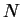
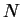

Next: STRFPAK's Calculation Implementation
Up: Estimating the STRF
Previous: Estimating the STRF
Contents
STRFPAK implements the generalized reverse
correlation method described in Theunissen et al 2001 ![[*]](file:/usr/share/latex2html/icons/crossref.png) to estimate the STRFs of sensory neurons from their
responses to complex stimulus ensembles.
Since a complete
description of the second-order statistics of the stimulus ensemble
is required for estimation,
STRFPAK first computes
the stimulus auto-correlation matrix and the stimulus-response
cross correlation vector.
The auto-correlation matrix of the
stimulus and the stimulus-response cross-correlation vector
to estimate the STRFs of sensory neurons from their
responses to complex stimulus ensembles.
Since a complete
description of the second-order statistics of the stimulus ensemble
is required for estimation,
STRFPAK first computes
the stimulus auto-correlation matrix and the stimulus-response
cross correlation vector.
The auto-correlation matrix of the
stimulus and the stimulus-response cross-correlation vector
 are described as follows (see for more details).
are described as follows (see for more details).
and
where  denotes the correlations between spatial dimensions
denotes the correlations between spatial dimensions
 and
and  for all the relevant time delays.
 is the length of time dimension and
for all the relevant time delays.
 is the length of time dimension and  is the
number of spatial parameters.
The estimated STRF from the linear mean-square estimation
is the
number of spatial parameters.
The estimated STRF from the linear mean-square estimation
 is given as follows:
is given as follows:
where is the estimated STRF. STRFPAK then normalizes
the cross-covariance matrix between the stimulus and the response
by auto-covariance matrix of the stimulus to get the
estimated STRF. For error estimation analysis,
the Jackknifed STRFs are also calculated if multiple data sets
are selected. For the Jackknifed error estimation techniques,
please refer to [8].
Next: STRFPAK's Calculation Implementation
Up: Estimating the STRF
Previous: Estimating the STRF
Contents
2004-08-09
![\begin{displaymath}C_{sr} = <sr> = \left(\begin{array}{c}
<s[t - 0]r[t]>\\ \vdots \\
<s[t-NM+1]r[t]> \end{array}
\right)
\end{displaymath}](img63.png)